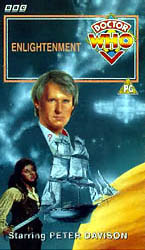
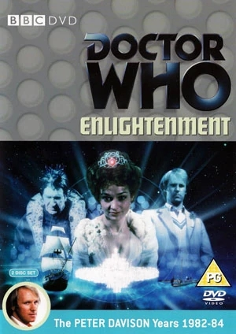
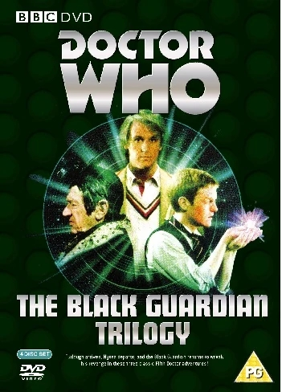
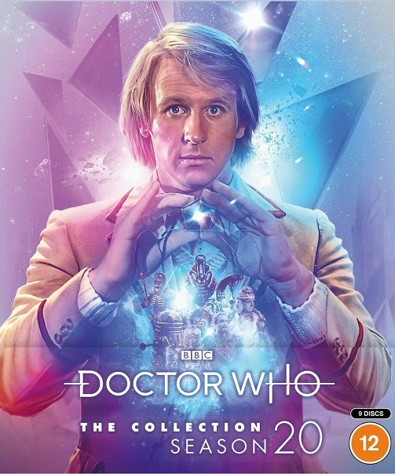
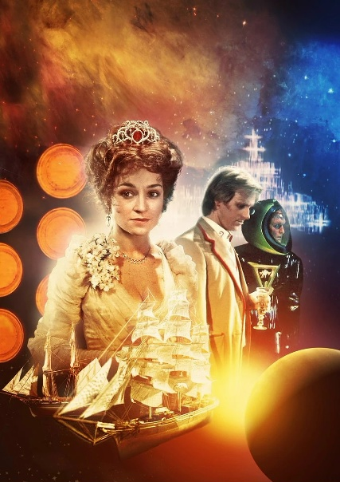
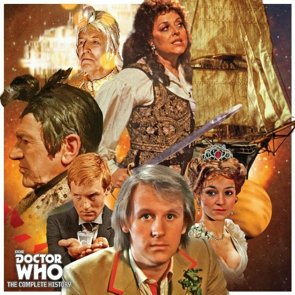

Эра Пятого Доктора (20 сезон)
<<< НАЗАД ||| 5. Просвещение ||| ДАЛЬШЕ >>>
Субтитры: Русские и Английские |  |
|---|---|
с обновленными спецэффектами Субтитры: Русские и Английские | |
с обновленными спецэффектами 16:9 (2009) Субтитры: только Английские | |
с обновлением визуальных эффектов (cunningmunki) Субтитры: отсутствуют | над серией] |
Enlightenment
Дата выхода: 1-9 марта 1983
Формат: 4 эпизода по 25 мин.
 |  |  камео |
Финал трилогии Чёрного Стража. ТАРДИС материализуется на борту парусного корабля — настоящего, деревянного, но плывущего в открытом космосе. Экипаж не помнит, как сюда попал, и уверен, что всё ещё в земном океане. Вечные — существа вне времени — устроили гонку между кораблями разных эпох, а приз — Просвещение, кристалл абсолютного знания. Чёрный Страж снова требует от Турлоу убить Доктора.
Единственная серия классического «Доктора Кто», над которой работали женщина-сценарист и женщина-режиссёр. Изначально Стражей в сюжете не было — их добавил Эрик Савард, заменив изначальных «Просветителей». А за основу приза взято древо познания добра и зла из Библии.
 VHS - февраль 1993 |   DVD+Boxset - 10 августа 2009 |  Blu-ray - 18 сентября 2023 * Версия в нашей группе |
|---|





Трейлер: